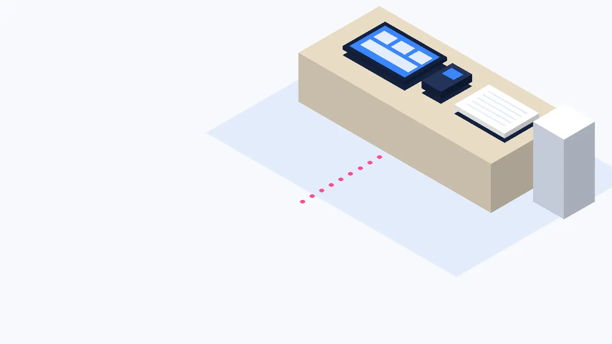
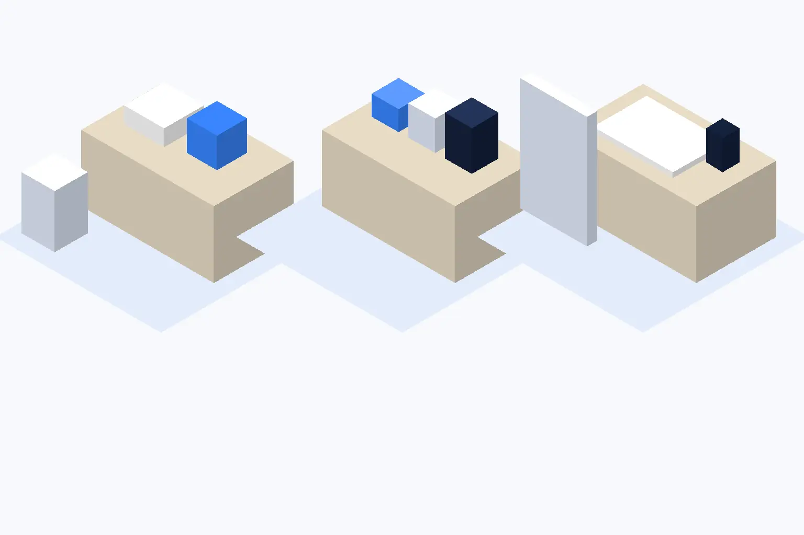
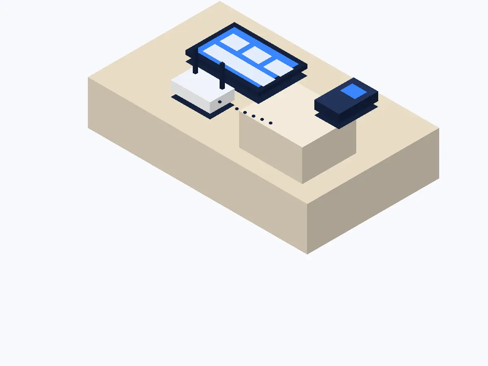

食堂席の予約の電話が多いお店
- カード決済いまのレジの横に読み取り機だけ置く
- ネット予約席の予約を、営業中の電話から外す
- レジの入れ替え慣れてから売上の集計をまとめる

画像はAI生成のイメージです
従業員5人以下のお店が対象です。近い入口を選ぶと、その業態でよくある入れ替えの順番が分かります。

対応範囲は見本上の設定です。

相談から本番まで、早ければ3週間。各段階で、お店に用意していただくものも先にお伝えします。
いまの道具と困りごとを聞きます。オンラインで30分。
用意するものいまのメニュー表か商品の一覧
2〜3通りの組み合わせと、月々の費用を並べてお見せします。
用意するもの回線の契約書類（あれば）
定休日にお店へ伺い、商品・予約枠・決済を設定します。
用意するもの予約台帳・よく使うスマートフォン
お店の方と2回練習してから、本番の営業日を決めます。
用意するもの練習に使う1時間ほど

そろっていなくても相談はできます。足りないものは、相談のあとでお伝えします。
てびき舎に払うのは、設定作業の料金だけです。機器の月額は、機器会社と直接ご契約いただきます。
相談
0円
何度でも・オンライン可
設定作業（1回）
16,500円〜
レジ・決済・予約のうち1つ
機器の月額
直接契約
てびき舎は代金を預かりません
| 条件 | 追加の費用 |
|---|---|
| 出張の距離が片道10kmを超える | 10kmごとに 1,100円 |
| 商品・顧客のデータが300件を超える | 300件ごとに 5,500円 |
| 3つ目以降の練習の回 | 1回 3,300円 |
すべて税込・見本用の架空価格です。作業の前に、見積もりを書面でお渡しします。
はい。いまの道具と困っていることだけ教えてください。何から替えるかを一緒に決めます。
ありません。カード決済や予約から始めて、レジは慣れてから替える順番もよく選ばれます。
故障は機器会社の窓口です。設定の困りごとは、本番から1か月はてびき舎にも相談できます。
はい。相談は無料で、その後の依頼は必要ありません。